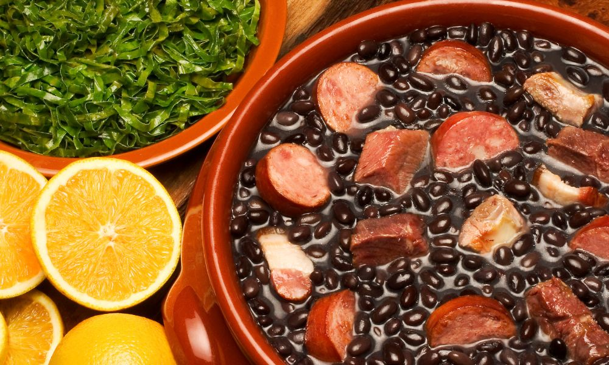

Antes de ser o ícone que conhecemos, a Feijoada tem uma história tão rica quanto seu sabor. Sua origem remonta aos tempos coloniais, nas senzalas, onde os escravizados africanos aproveitavam as partes menos nobres do porco descartadas pelos senhores, combinando-as com o feijão preto, alimento abundante e nutritivo. Essa mistura engenhosa e saborosa não era apenas uma forma de subsistência; era um ato de criação e resiliência, transformando sobras em uma refeição robusta e cheia de significado. Ao longo dos séculos, o prato evoluiu, incorporando influências europeias e indígenas, tornando-se o símbolo de união e brasilidade que é hoje. Descubra as camadas de história e sabor que só a verdadeira Feijoada pode oferecer!
Ver Técnica de Marketing
Apelo à História e Autenticidade, combinado com Apelo Emocional. Ao narrar a origem da feijoada nas senzalas, o texto conecta o prato a um passado de resiliência e criação, conferindo-lhe um valor histórico e cultural profundo.